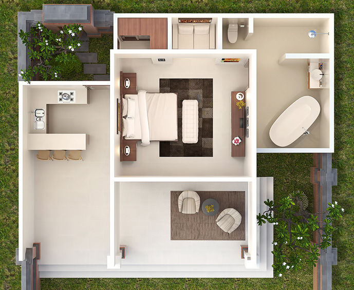

<div class="container content-md">
  <div class="row">
    <div class="col-md-3">
      <div class="headline-v2">
        
      </div>
      <ul class="nav nav-pills nav-stacked jcs-site">
        <li><a class="btn btn-link" href="/plans-intro.html#page-title">Introduction</a></li>
        <li><a class="btn btn-link" href="/plans-sitemap.html#page-title">Sitemap</a></li>
        <li><a class="btn btn-link" href="/plans-entrance.html#page-title">Entrance</a></li>
        <li><a class="btn btn-link" href="/plans-pool.html#page-title">Main Pool</a></li>
        <!--
        <li><a class="btn btn-link" href="/plans-studio.html#page-title">The Studios</a></li>
        -->
        <li><a class="btn btn-link" href="/plans-kitchen.html#page-title">Communal Kitchen</a></li>
        <li><a class="btn btn-link" href="/plans-meetingplace.html#page-title">The Meeting Place</a></li>
        <li><a class="btn btn-link" href="/plans-spa.html#page-title">The Healing Spa</a></li>
        <li><a class="btn btn-link disabled" href="/plans-villas.html#page-title">The Villas</a></li>
        <li><a class="btn btn-link" href="/plans-available.html#page-title">Available Spaces</a></li>
      </ul>
    </div>
    <div class="col-md-9">
      <p>
      Our Villas are spacious, open plan, one bedroom villa’s each with their own
      private garden.
      </p>

      <p>
      There are 8 private villa’s on-site that have been designed for privacy, and
      maximizing the indoor-outdoor living style that Bali is famous for. These
      villa’s have been designed around an award winning concept already in place
      here in Bali, each containing their own semi-kitchen, small courtyard entrance,
      large open bathroom, walk-in robe, sitting alcove and large balcony. Plenty of
      space!
      </p>

      <p>
      The Villa’s will be leaseheld, with full or part-time occupancy as well as no
      occupancy making them available for visitor accommodation managed by us on
      your behalf.
      </p>

      <p>
        Find out more about becoming a <a href="/villa.html">Sanctuary Leaseholder</a>.
      </p>

      <hr>

      <p>
      <em>Please note:</em> these images are to show the floor plan and are not reflective of
      the ‘décor’ within the villa.
      </p>

      <a href="public/img/jcs/plan/xx-villa-birds-eye.jpg" rel="gallery"
        class="fancybox" title="Villa Design">
        <span>
          
        </span>
      </a>

    </div> <!-- col-md-9 -->
  </div>
</div>

